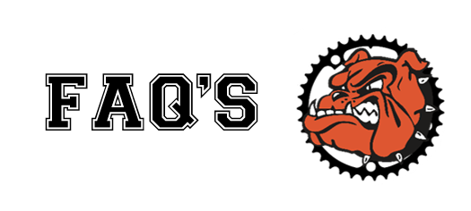

Frequently Asked Questions
If you live in Brighton MI, or the surrounding area, and are a student, yes! If you are an adult and want to coach, learn more at MiSCA coaching.
Check out the explanation on the JOIN page
No, (unless you are planning on lettering for High School) but we encourage athletes to try it once to get the full experience.
If the student is in middle school or high school, yes. If the athlete is in elementary school, ask at the spring meeting, or reach out to ________.
Check out the explanation on the PRACTICES page
The MiSCA mountain bike race series are 6 races across Michigan, held on weekends August through October. Check out the MiSCA site for more information.
Be a ________ in high school, attend ______ practices, and finish _______ races in the varsity category.
There is a team registration cost, MiSCA registration cost
and race registration costs.
Equipment costs vary widely
from used bicycles and gear to brand-new high-end gear.
The
MiSCA Moms (and Dads / Coaches too) Facebook Group is a great place to find used gear.
Any of the local shops would love to help you out with new gear.
Hammerhead Bikes, sells Yeti, Niner, Revel and more
Hometown Bicycles, Services all models of bicycles
Motor City Bicycle, sells Specialized bicycles and Accessories
D&D Bicycles, sells Giant bicycles and Accessories
Yes! We have different groups of riders, so every level of
athlete is able to progress.
Note, we ride in the woods, on trails with rocks, roots, dirt, trees,
uphill, downhills, and bugs. It is great fun, but not always easy.
If they are going to be in kindergarten in the fall,
and a parent is going to ride with them at every practice, yes!
Note: practice mileage will be between 2-10 miles, on trails with rocks, roots, dirt, uphill, and downhills.
Brighton area has some awesome local shops to support your ride:
Hammerhead Bikes, sells Yeti, Niner, Revel and more
Hometown Bicycles, Services all models of bicycles
Motor City Bicycle, sells Specialized bicycles and Accessories
D&D Bicycles, sells Giant bicycles and Accessories